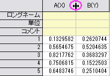

ワークシートの操作：列と行
Arrange-Wks
このページでは、基本的な列と行の操作について説明します。
列の追加
ワークシートに列を追加するには、以下のいずれかを実行します。
- 列：新規列の追加を選択する（n列を追加する）。
- 標準ツールバーの列の追加ボタン
 をクリックする（1列を追加する）。
をクリックする（1列を追加する）。
- ワークシートの右側にある灰色の領域(ワークブックの内側)を右クリックし、ショートカットメニューから新しい列の追加を選択する（1列を追加する）。
列は、最後尾のワークシート列の右側にY列として追加されます。 新しい各列にはアルファベット順に名前が付けられます（A、B、C、...X、Y、Z、AA、BB、CC、...）。ワークシート中でまだ使われていないアルファベット順で最初の文字の列名が付けられます。
列の挿入
- 列を挿入するには、目的の挿入箇所のすぐ右側にある列を選択してから、編集：挿入を選択するか、右クリックしてショートカットメニューから挿入を選択します。 選択された列の指定に関係なく、新しい列はY列として指定されます。
- ワークシートの特定の場所にn列を挿入するには、上記の手順をn回繰り返すか、列を挿入する箇所のすぐ右側にあるn列を選択した上で、編集：挿入を選択するか、右クリックしてショートカットメニューから挿入を選択します。
列の削除
- ワークシート中で１つ又は複数の行を削除するには、削除する行を選択して、｢編集：削除｣を選択するか、右クリックによるショートカットメニューで｢削除｣を選択します。
もしワークシートより列(つまりデータセット)が削除されると、それに結びついたグラフ中の表示もプロジェクトから消えてしまうことに特に気を付けてください。例えば、ある列データがグラフウィンドウ中にプロットされており、その列が削除されてしまうと、そのプロットも無くなってしまいます。
|
Note: 列自体は保存しておき、単にそのデータをクリアするだけなら、｢編集：クリア｣を選択します。
|
行の挿入
- ワークシート中の特定位置に行を1行挿入するには、新しい行を挿入したいすぐ下の行を選択します。｢編集：挿入｣を選択するか、右クリックによるショートカットメニューで｢挿入｣を選択します。
- n個の行をワークシートの指定位置に挿入するには、上記の１行挿入の操作をn回繰り返します。もしくは、挿入したい位置のすぐ下のn行をまとめて選択します。そのうえで｢編集：挿入｣あるいは、ショートカットメニューの｢挿入｣を行ないます。
行の削除
- ワークシート中で１つ又は複数の行を削除するには、削除する行を選択して、｢編集：削除｣を選択するか、右クリックによるショートカットメニューで｢削除｣を選択します。
|
Note: 行自体は保存しておき、単にそのデータをクリアするだけなら、「編集：削除」ではなく、｢編集：クリア｣を選択します。
|
列/行の移動
- 列または結合列を左方向または右方向に移動するには、列を選択し「ワークシート列操作」ツールバーの「左に移動」ボタン
 または「右に移動」ボタン
または「右に移動」ボタン をクリックします。
をクリックします。
- ある列をワークシートの最初の列または最後の列に移動するには、列を選択し、メニューから｢列：列の移動：最初に移動｣または｢列：列の移動：最後に移動｣を選びます。もしくは、「ワークシート列操作」ツールバーの「終わりへ移動」ボタンまたは「始めへ移動」ボタン
 をクリックします。
をクリックします。
- 行または結合行を上/下に移動するには、行を強調表示し、ミニツールバーで、行を上に移動または行を下に移動
 ボタンを選択します。
ボタンを選択します。
|
Note: 「切り取り」や「貼り付け」のコマンドは、データに対して行われます。列や列属性に対しては、行われません
|
列幅の変更
- 列の幅を変更するには、列ヘッダの間をポイントします。ポインタが双方向の矢印になったら、ドラッグして列幅を変更します。選択したすべての列が共通の幅に調整されることに注意してください。

- もしくは、列をダブルクリックして｢列のプロパティ｣ダイアログボックスを開きます。『幅』テキストボックスに列幅を入力します。 単位は文字数単位となります。（つまり、表示される最大文字数）。
行ヘッダの幅と高さの変更
- 行ヘッダの幅を変更するには、ワークシートウィンドウ内で、ワークシートの右側にある灰色の領域(ワークブックの内側)をダブルクリックします。 ワークシートプロパティダイアログの、行ヘッダの幅テキストボックスに任意の値を入力します。このテキストボックスの値は、テキストの高さの1/10の単位です。
- 行ヘッダの高さを変更するには、行ヘッダをドラッグして高さを変更します（一度に1つの行のみ変更します）。
列と行の転置
- アクティブなワークシートの列と行を転置するには、ワークシート：データ転置を選択します。この機能は、ワークシートの列を行と交換し、行を列と交換します。
もし転置の前に、ワークシートの行が列よりも多い場合、Originは転置操作の一環として必要数の列を追加します。 これらの追加列には、ワークシート中で列名としてまだ使われていないアルファベット順で最初の文字の列名が付けられます。
|
Note: ワークシートの行と列を入れ替える際、ワークシートの各列は同じ｢データ型｣を持っていなければなりません。例えば、全列が『文字と数値』型のみ、あるいは『数値』型のみであるようなことが必要です。列のデータ型は、個々の列の｢列プロパティ｣ダイアログボックスのオプションにある『フォーマット』ドロップダウンリストで選択できます。列ヘッダをダブルクリックして、その特定の列についての、このダイアログボックスを開きます。なお、Originのワークシートにおけるデフォルトの列データ型として、どの列においても｢文字と数値｣に設定されます。
|